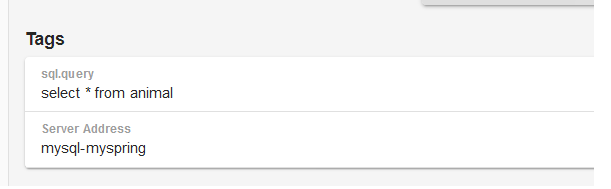
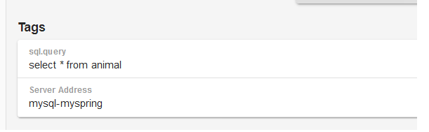
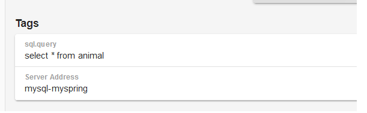

配置之后，链路跟踪中会展示各SQL语句的内容、耗时、异常等信息，如下：
 

只需要在数据库url配置后添加statementInterceptors=brave.mysql.TracingStatementInterceptor即可，如下红字部分：
spring.datasource.driverClassName = spring.datasource.url = jdbc:mysql://localhost:3306/edkdemo spring.datasource.username = spring.datasource.password =
配置之后，链路跟踪中会展示各SQL语句的内容、耗时、异常等信息，如下：
